Թիրախային մարքեթինգ. Պարզել, թե որ մարզում կա ավելի մեծ պահանջարկ կոնկրետ ապրանքի կամ ծառայության նկատմամբ:
Աշխարհագրական տեղեկատվական համակարգեր
ԱՏՀ (GIS) ներածություն
Տարածական տվյալները՝ որոշումների հիմքում
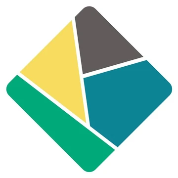
Հայկ ԽաչատրյանGeoGeeks LLC Տնօրեն
ԵՐԵՎԱՆ 40.18° N 44.51° E
Իմ մասին
Հայկական պետական մանկավարժական համալսարան,
ինֆորմատիկայի և մաթեմատիկայի ֆակուլտետFB: GeoGeeks LLC
Տարածական տվյալներ՝ քարտեզից մինչև մոդել
Բովանդակություն
- 01
Կիրառություններ
- 02
Տվյալներ և մոդելավորում
- 03
Մշակաբույսերի աճի մոդել
- 04
Դաշտային նմուշառում
- 05
Բացառման չափանիշներ
Ժամանակակից GIS
GeographyԱշխարհագրություն
+
ITՏեղեկատվական տեխնոլոգիաներ
=
GISԱՏՀ
Վերջին 50 տարում GIS-ը սկսեց տեսությունից ձևափոխվել գիտության՝ դառնալով ժամանակակից հարթակ, որպեսզի ավելի լավ հասկանանք և պլանավորենք աշխարհը։
Science
of where
GIS – ԱՏՀ
GGeographicԱշխարհագրական
IInformationՏեղեկատվական
SSystemՀամակարգ
«Տարածական տվյալների հավաքագրման, կառավարման, վերլուծության և վիզուալիզացիայի համախումբ։
Ինտեգրում է տարածական տվյալները՝ ապահովելով խորքային պատկերացում տեղադիրքի վրա հիմնված տեղեկատվության վերաբերյալ։
GIS տվյալներ
Ինտեգրված տվյալներ
Շերտերը միավորելով՝ ստանում ենք մեկ ամբողջական պատկեր։
- Անտառներ
- Շենքեր
- Ճանապարհներ
Մաս 01
Կիրառություն տարբեր ոլորտներում
GIS-ը ճգնաժամային կառավարման մեջ
GIS-ը ճգնաժամային կառավարման ժամանակ պատասխանում է երեք կարևոր հարցի՝ որտե՞ղ է վտանգը, ի՞նչն է վտանգված և որտե՞ղ պետք է ուղղել ռեսուրսները։
Տվյալներից՝ դեպի արագ և հիմնավորված որոշումներ
-
ՏԵՂՈՐՈՇՈՒՄ — Որտե՞ղ է վտանգը։
Քարտեզի վրա հայտնաբերվում են ջրհեղեղի վտանգի գոտիները, բնակավայրերն ու ճանապարհները։
-
ԱԶԴԵՑՈՒԹՅՈՒՆ — Ի՞նչն է վտանգված։
Գնահատվում են վտանգի ազդեցության տակ գտնվող բնակավայրերը, ենթակառուցվածքներն ու բնակչությունը։
-
ՈՐՈՇՈՒՄ — Որտե՞ղ ուղղել ռեսուրսները։
Առաջնահերթություն են ստանում առավել վտանգված և հրատապ օգնության կարիք ունեցող տարածքները։
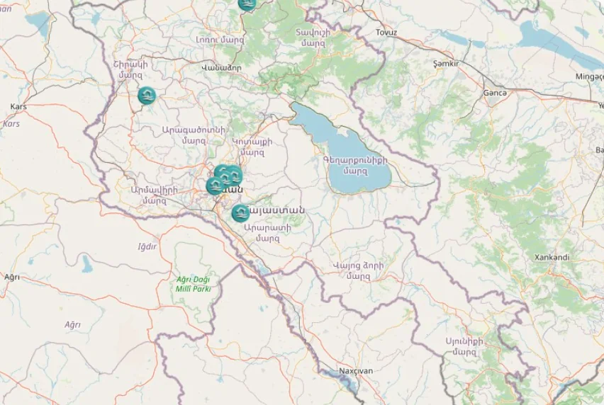
Հայաստանի օրինակ՝ Ջրհեղեղների տեղեկատվական հարթակ
https://fiparmenia.netlify.app/Հիմնական ուղերձը՝ GIS-ը տարածական տվյալները վերածում է գործնական որոշումների՝ օգնելով ավելի արդյունավետ կառավարել ճգնաժամը։
Berqategh.am — վաճառքի հարթակ և վերլուծական գործիք
Հարթակը ոչ միայն հնարավորություն է տալիս ներկայացնել և վաճառել գյուղատնտեսական արտադրանքը, այլև տրամադրում է տվյալներ՝ գյուղատնտեսական շուկայի միտումները և գների փոփոխությունները հասկանալու համար։ Օրինակները ցույց են տալիս, թե ինչպես կարող են գների համեմատությունն ու փոփոխությունների վերլուծությունն օգնել հասկանալ շուկայի իրավիճակը։
Հիմնական ուղերձը՝ GIS-ի և տնտեսական տվյալների համադրումը կարող է աջակցել արտադրության պլանավորմանը, շուկայի գնահատմանը և գյուղատնտեսական բիզնեսի զարգացման վերաբերյալ որոշումների կայացմանը։
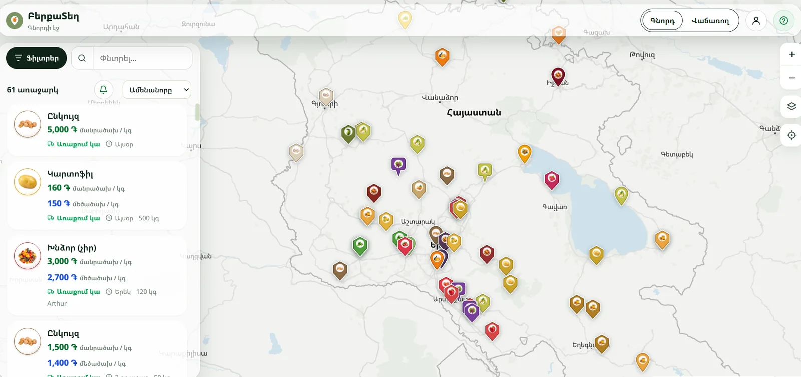
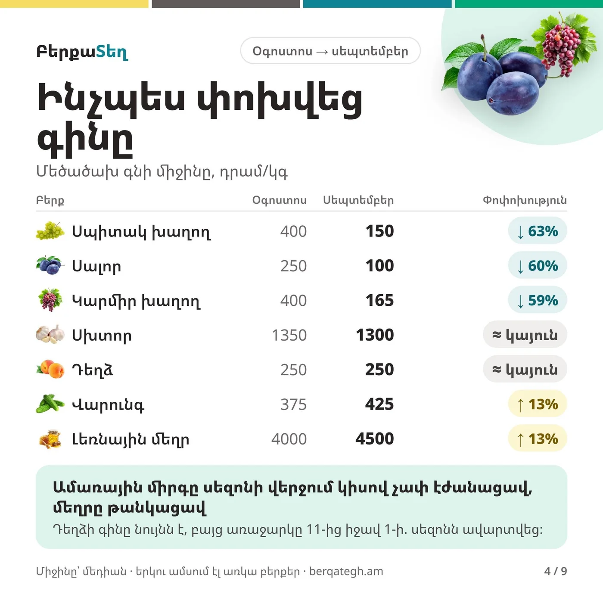
Որոնումների տարածական վերլուծություն
Հնարավորություններ.
Սոցիալական տրամադրություններ. Վերլուծել հասարակական հետաքրքրությունները կամ մտահոգությունները (օրինակ՝ առողջապահական հարցեր կամ կրթական ծրագրեր) ըստ տեղանքի:
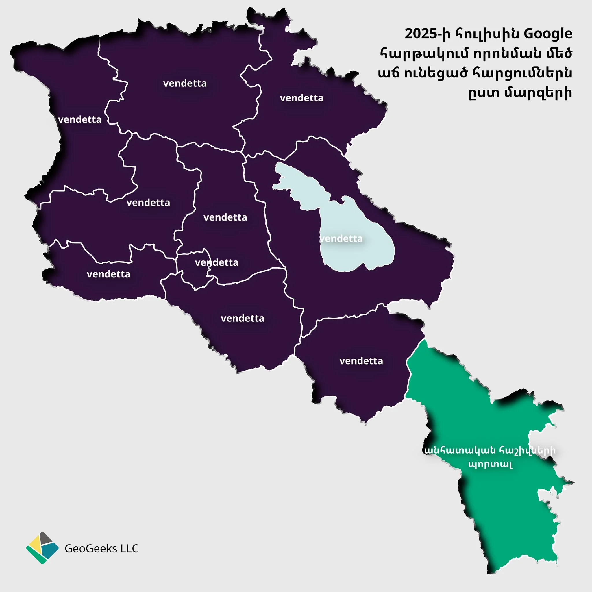
Հողածածկի մոդելավորում
- Արբանյակային լուսանկարների օգտագործում
- Դաշտային հետազոտություն
- Արհեստական բանականություն
Հողօգտագործման դասեր՝ արոտ, մարգագետին, այլ խոտածածկ, թփուտ, վարելահող, անտառ
GIS կիրառում․ ոռոգման ջրի պահանջարկի հաշվարկ
Մշակաբույսերից՝ դեպի ջրի պահանջարկ
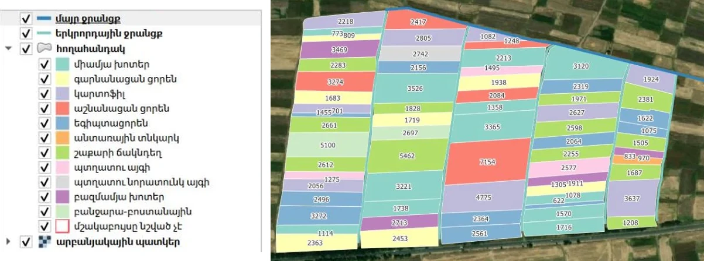
-
Մշակաբույսերի տարածական քարտեզագրում — նույն գույնով նշվում են նույն մշակաբույսերով զբաղեցված հողակտորները։
-
Ջրապահանջարկի հաշվարկ — յուրաքանչյուր մշակաբույսի ջրի պահանջարկը համադրվում է դրա զբաղեցրած տարածքի հետ։
-
Ոռոգման պլանավորում — հաշվարկվում է ուսումնասիրվող տարածքի ոռոգման ջրի ընդհանուր պահանջարկը։
Արդյունքը՝ տարածական տվյալների հիման վրա հնարավոր է պլանավորել ոռոգման ջրի պահանջարկը՝ ըստ մշակաբույսերի և հողակտորների։
Մաս 03
Մշակաբույսերի աճի համապատասխանության մոդել
Մշակաբույսերի աճի պարամետրեր
| Մշակաբույս | T min | T opt min | T opt max | T max | T kill | R min | R opt min | R opt max | R max | G |
|---|---|---|---|---|---|---|---|---|---|---|
| Առվույտ | 3 | 13 | 29 | 39 | -5 | 30 | 45 | 75 | 90 | 90 / 130 / 155 |
| Գարի | 5 | 10 | 27 | 32 | -2 | 20 | 35 | 60 | 75 | 75 / 90 / 105 |
| Ոզնախոտ | 3 | 12 | 28 | 39 | -5 | 25 | 35 | 65 | 85 | 90 / 100 / 115 |
| Վարսակ | 4 | 12 | 27 | 32 | -2 | 30 | 40 | 70 | 85 | 90 / 105 / 120 |
| Red fescue* | 3 | 12 | 27 | 38 | -6 | 20 | 30 | 65 | 70 | 90 / 105 / 120 |
| Կորնգան | 3 | 12 | 27 | 38 | -5 | 20 | 35 | 65 | 80 | 68 / 75 / 90 |
T՝ ջերմաստիճան (°C)։ R՝ տեղումների շեմեր (սկզբնաղբյուրում չափման միավորը նշված չէ)։ G՝ աճի ցիկլի երեք արժեք։ Կանաչ սյուները՝ օպտիմալ միջակայք։
Մոդելի կիրառում (R ծրագրավորման միջավայր)
library(Recocrop)library(terra) # Administrative border data of Armeniaadm <- geodata::gadm("Armenia", level = 1) # Input EcoCrop parameters for each cropAlfalfa <- list(name = "Alfalfa", ...) # run EcoCrop modelm <- Recocrop::ecocrop(Cat_grass)Պատմական (1970–2000) և կանխատեսվող կլիմայական ցուցանիշներ (2040, 2060, 2080, 2100)։ WorldClim
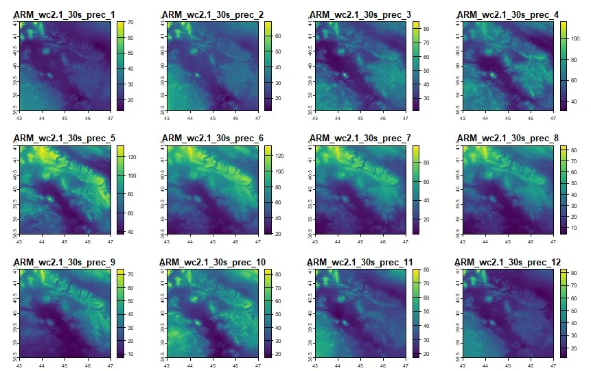
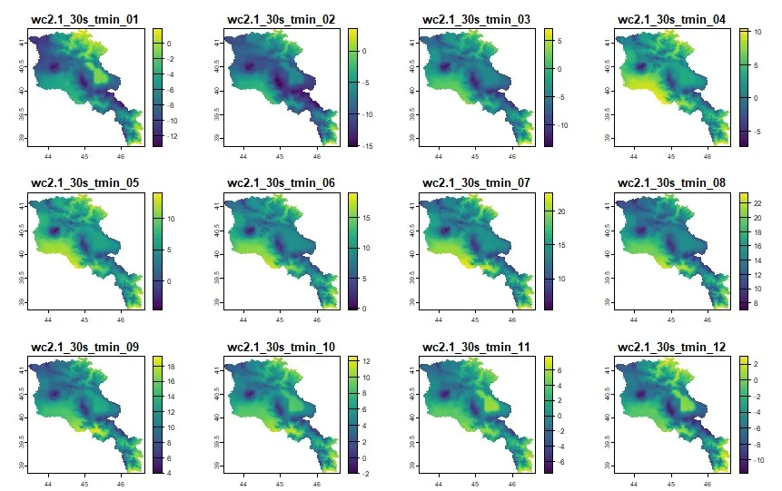
Առվույտի աճի համապատասխանությունը Հայաստանում
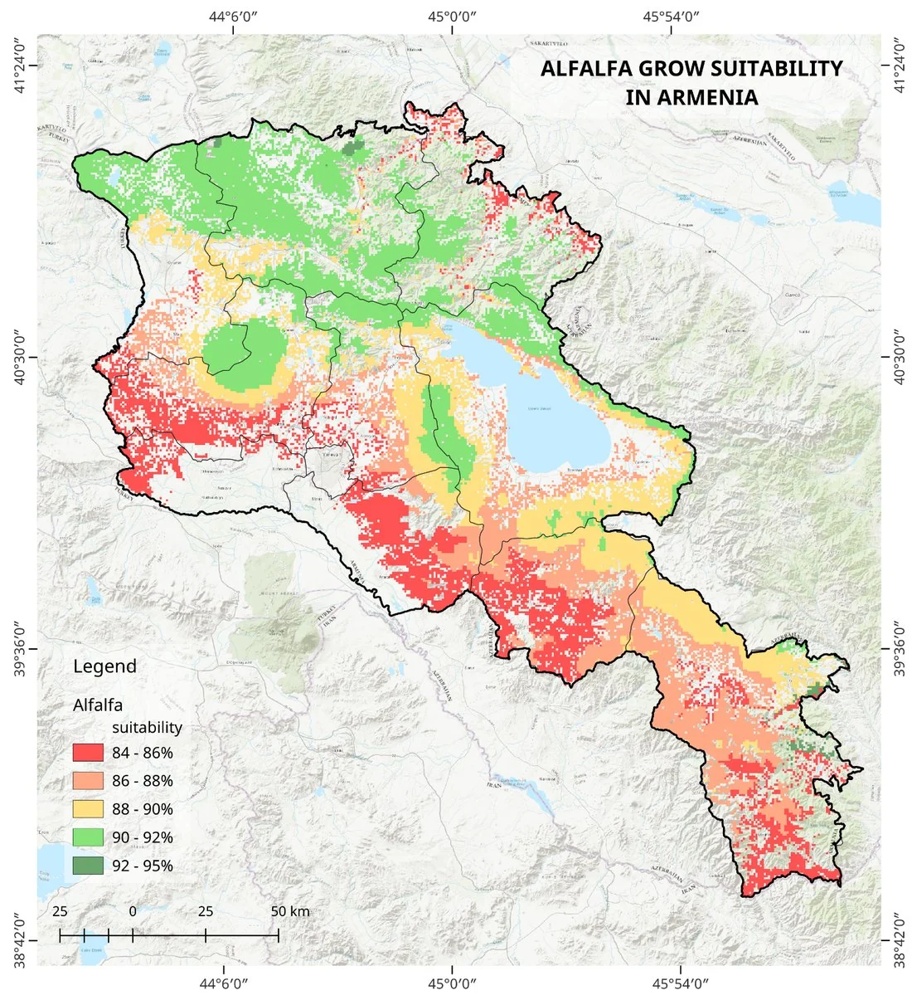
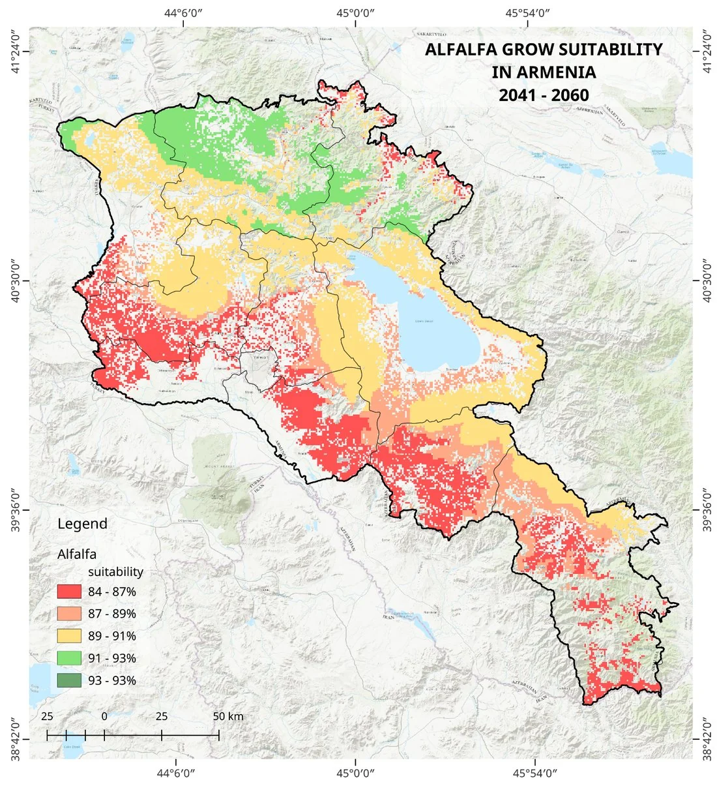
Պատմական կլիմա (1970–2000) 2041–2060, SSP2-4.5Ջերմաստիճանային միջակայք (°C)
- Հանդուրժելի
- Օպտիմալ
EcoCrop համապատասխանության մոդել (R), WorldClim 2.1։ Պատկերավոր համապատասխանություն, ոչ թե բերքատվության կանխատեսում։
Մաս 04
Դաշտային նմուշառում
Նախագիծը նախատեսում էր հողի 100 նմուշառում Սիսիան և Գավառ համայնքներում։
Ուսումնասիրվող տարածքը
ԳավառԳեղարքունիքի մարզ
ՍիսիանՍյունիքի մարզ
100 հողային նմուշերկու համայնքում
Գավառ
Նմուշառման համայնք
Գեղարքունիքի մարզՍևանա լճի մոտ
40.36° N 45.13° Eաշխարհագրական կոորդինատներ
≈ 1 970 մծովի մակերևույթից (DEM)
Սիսիան
Նմուշառման համայնք
Սյունիքի մարզՀայաստանի հարավ
39.52° N 46.03° Eաշխարհագրական կոորդինատներ
≈ 1 580 մծովի մակերևույթից (DEM)
4004 000 մ
Բարձրությունը մեծացված է 3,4 անգամ
Բարձրություններ՝ AWS Terrain Tiles (SRTM և այլն)։ Սահմաններ՝ geoBoundaries (CC BY)։
Ինը շերտ մեկ վերլուծության համար
Ռեսուրսները օպտիմալացնելու և ներկայացուցչական արդյունքներ ապահովելու համար մենք կիրառել ենք կլաստերային ալգորիթմ՝ հաշվի առնելով՝
GEEGoogle Earth Engine
բարձրություն
գոլորշունակություն
հողօգտագործում
NDVI
տեղումներ
թեքություն
հողում օրգանական ածխածին
հողատիպ
ջերմաստիճան
GEE հարթակում օգտագործվել է հեռահար զոնդավորման տվյալներ։
Ալգորիթմ դասակարգման համար
- GEE
9 շերտ՝ Google Earth Engine-իցԲարձրություն, NDVI, կլիմա, հող և այլն։
ալգորիթմԿիրառվել է դասակարգում իրականացնելու նպատակով։
- 100
հողի նմուշառումՍիսիան և Գավառ համայնքներում։ Կետերի ներկայացուցչականություն։
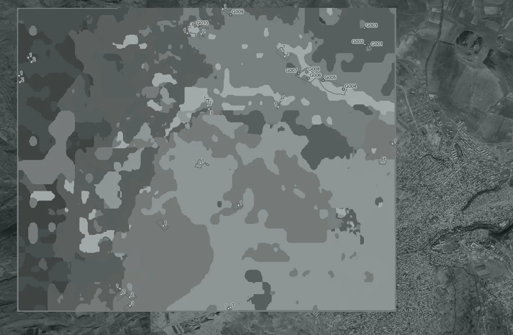
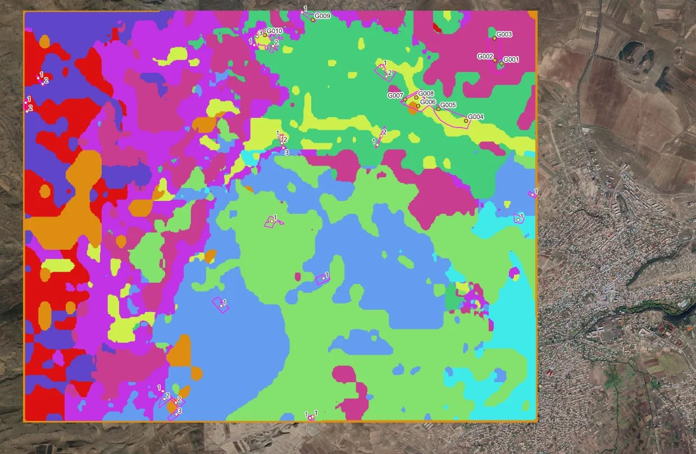
Տվյալների հավաքագրման մեխանիզմ
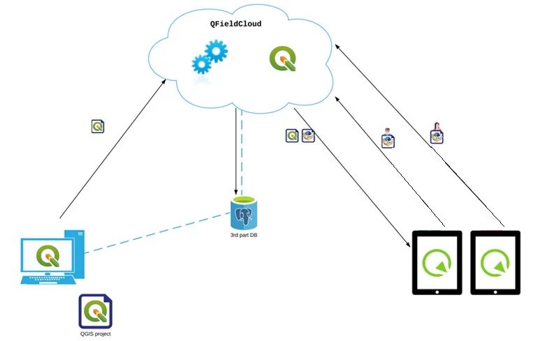
ԴաշտQField հավելված՝ պլանշետում կամ հեռախոսում
ԱմպQFieldCloud՝ տվյալների համաժամեցում
ԳրասենյակQGIS նախագիծ՝ վերլուծություն և քարտեզագրում
Մաս 05
Փուլ 1. Բացառման չափանիշներ
Բացառման չափանիշները՝ քայլ առ քայլ
- Բնակավայրեր և 500 մ բուֆերային գոտի
- Ճանապարհների գոտի՝ 80 մ
- Անտառներ
- Էլեկտրահաղորդման լարեր
- Գետեր
- Լճեր և ճահիճներ
- Վարելահողեր
- Ջրանցքներ՝ 30 մ
- Պատմամշակութային հուշարձաններ
- Հանքավայրեր
- Ակնհայտ ոչ համապատասխան տարածքների հեռացում
Օրինակ՝ աղբավայրի հնարավոր տարածքի ընտրություն։ Կանաչով՝ յուրաքանչյուր քայլից հետո մնացած տարածքը։
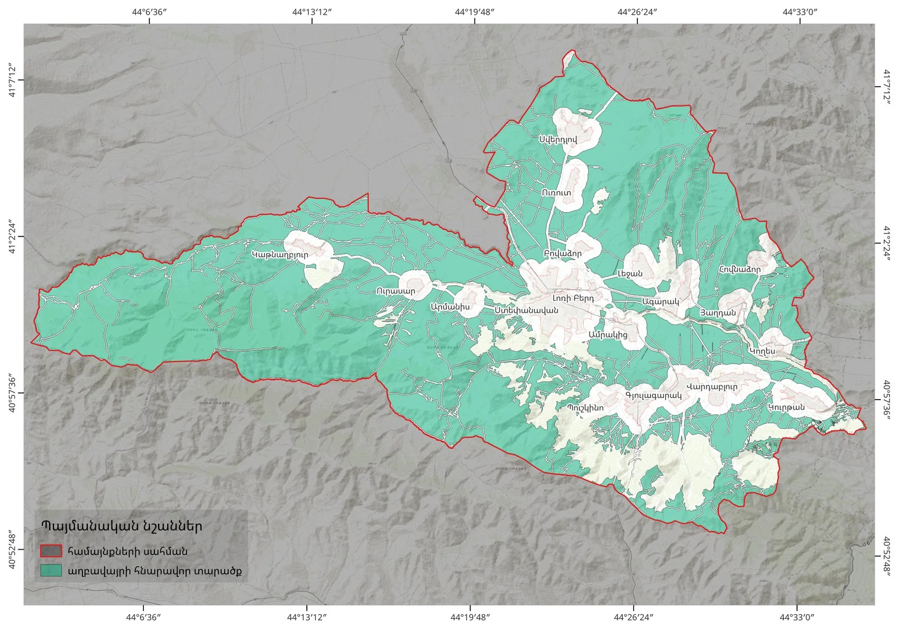
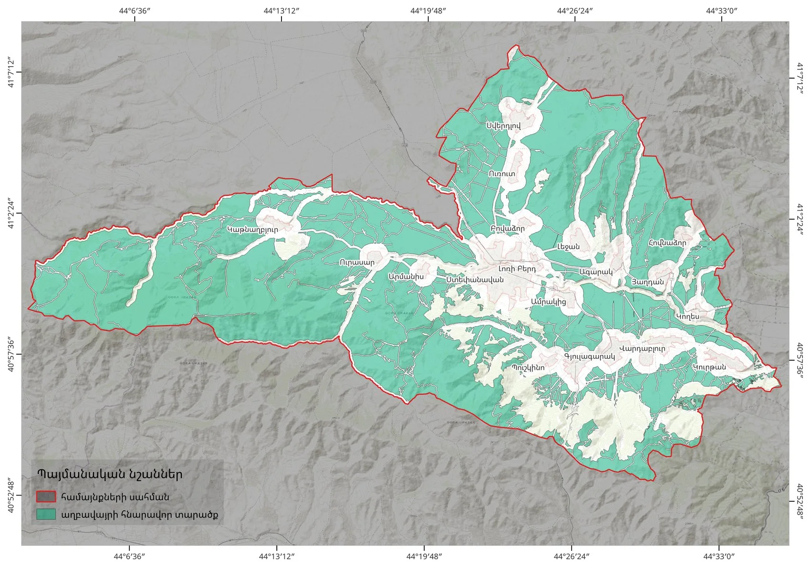
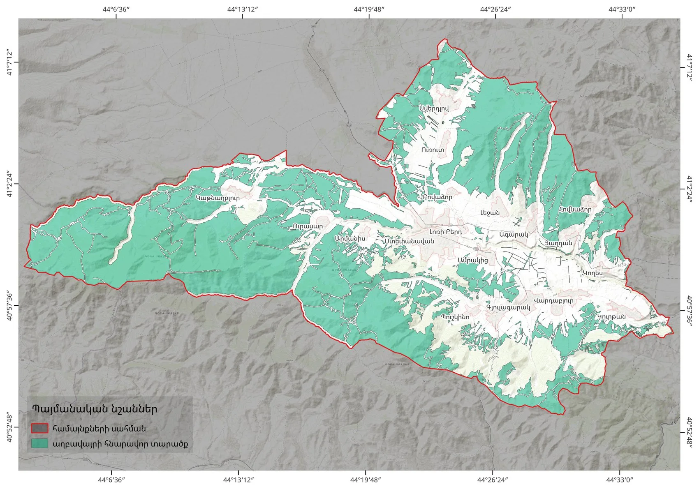
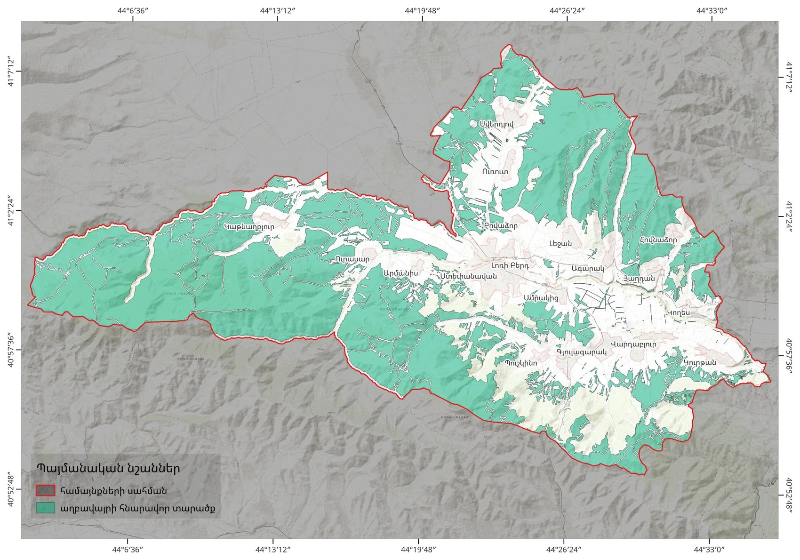
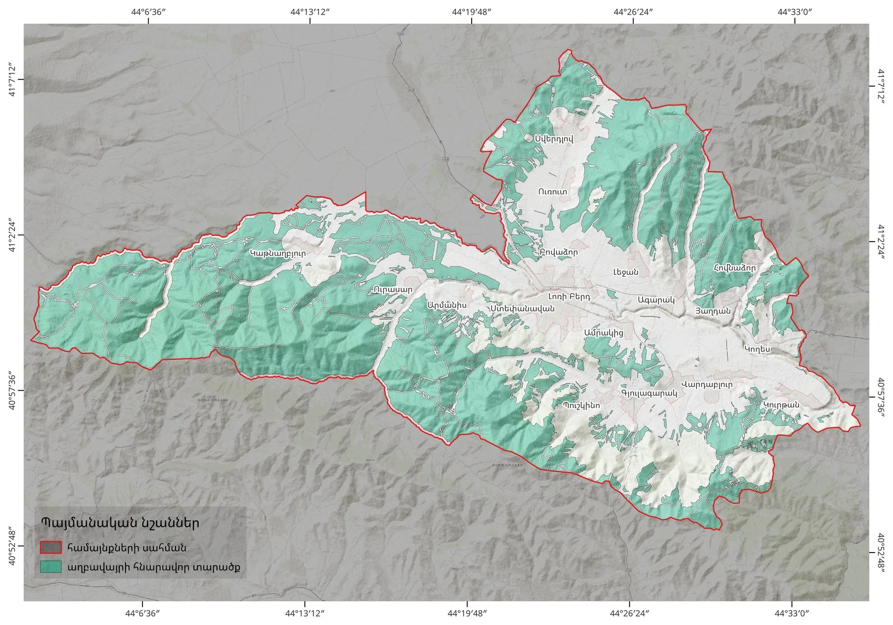
Լավագույն տեղանքի ընտրություն
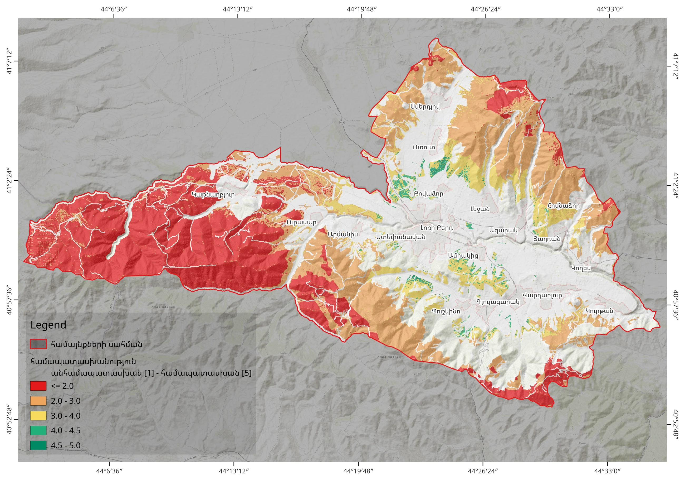
ԱՏՀ-ն ենթակառուցվածքներում
- Ենթակայանների թվայնացում
- Վերգետնյա և ստորգետնյա մալուխների թվայնացում
- Հենասյուների թվայնացում
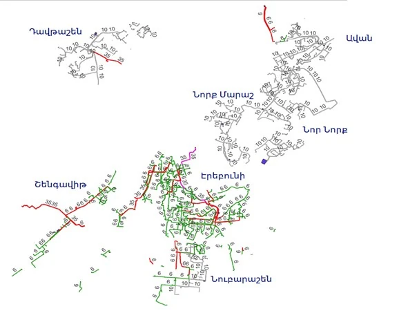
Աղետների ռիսկի կառավարում
Սեյսմիկ վտանգի քարտեզներ
GIS-ի միջոցով ստեղծվում են սեյսմիկ վտանգի քարտեզներ։
Ջրհեղեղների կանխատեսում
Գետերի հուների մոդելավորման միջոցով (օրինակ՝ Դեբեդ գետի ավազանում)։
Օրինակ՝ «Սևանա լիճ»
Remote Sensing-ով (հեռահար զոնդավորում) տեսնում ենք լճի ափամերձ տարածքների ջրածածկումը․ GIS-ը հաշվարկում է՝ քանի շինություն կմնա ջրի տակ, եթե լճի մակարդակը բարձրանա ևս 1 մետրով։
Ջրհեղեղի մոդելավորում
Ջրի տարածումըԻնչպես է ջուրը տարածվում ժամանակի ընթացքում։
Վտանգված տարածքներՀստակ երևում է՝ որ հատվածներն են ջրածածկվում։
ՊլանավորումՀիմք՝ նախազգուշացման և պաշտպանական միջոցառումների համար։
Մաս 02
GIS տվյալների հավաքագրում, մշակում և քարտեզագրում
«Հայաստանում հողերի դեգրադացման կանխման հանձնառությունների/պարտականությունների իրականացումը՝ դեգրադացված մարգագետինների կայուն կառավարման և վերականգնման միջոցով» ծրագրի շրջանակներում
Տվյալների բազա
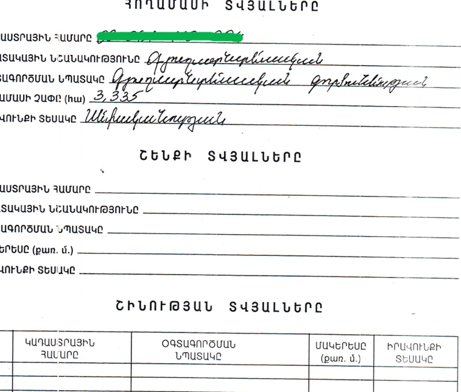
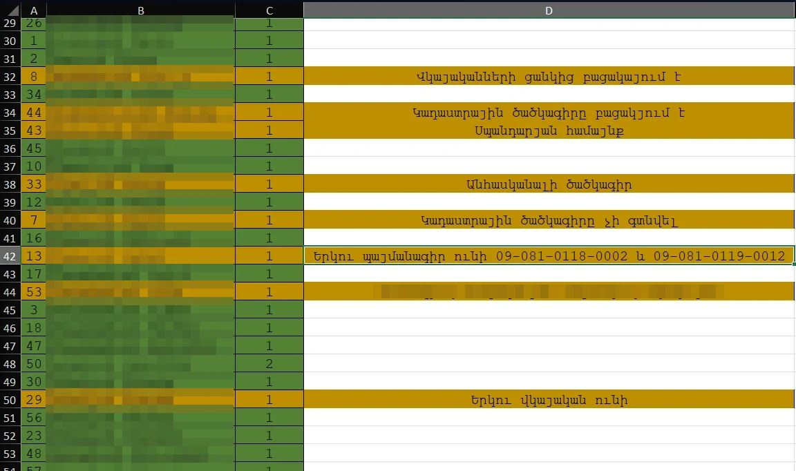
Կադաստրային տվյալների մշակում
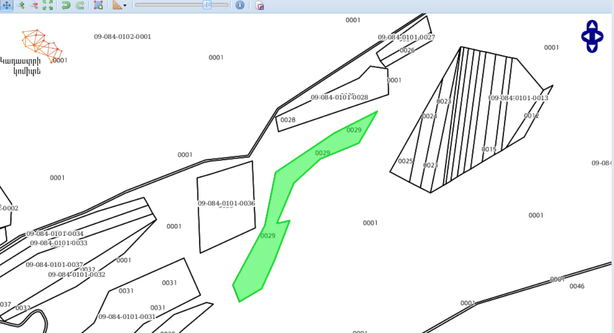
- Հողատարածքների կադաստրային ծածկագրերի դուրս բերում
- Համադրում MapArmenia հարթակի հետ
- Տարածքների տեղադիրքի ճշգրտում
- GIS բազաների վերջնական ձևավորում
Մապարմենաի լուսանկար
Քարտեզագրում
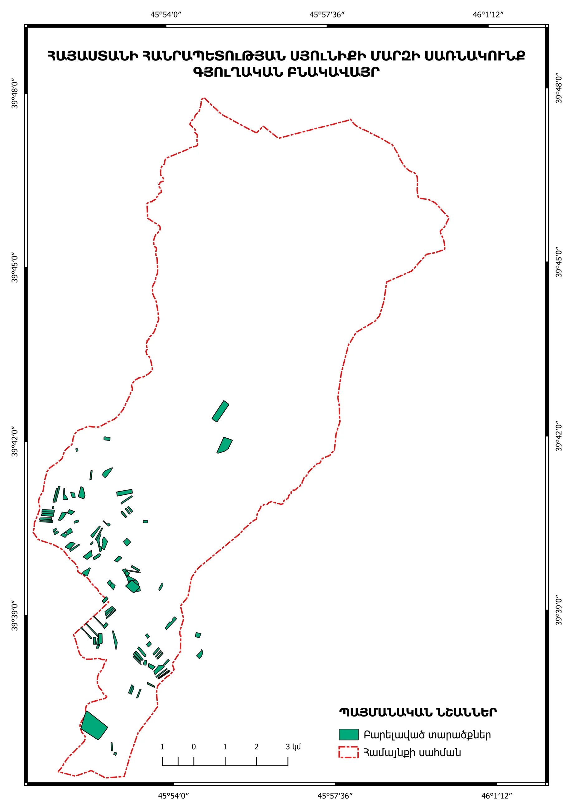
ՀԵՐԹԱՓՈԽԱՅԻՆ ԱՐԱԾԵՑՄԱՆ ՀԱՄԱԿԱՐԳԻ ԱՐՈՏՆԵՐՆ ՔԱՐՏԵԶԻ ՍՏԵՂԾՈՒՄ
- Քարտեզագրում ըստ կառավարման պլանների
- Համապատասխան GIS շերտերի ստեղծում
Տվյալները հիմք են հանդիսանում տարածքների բարելավման աշխատանքների համար:
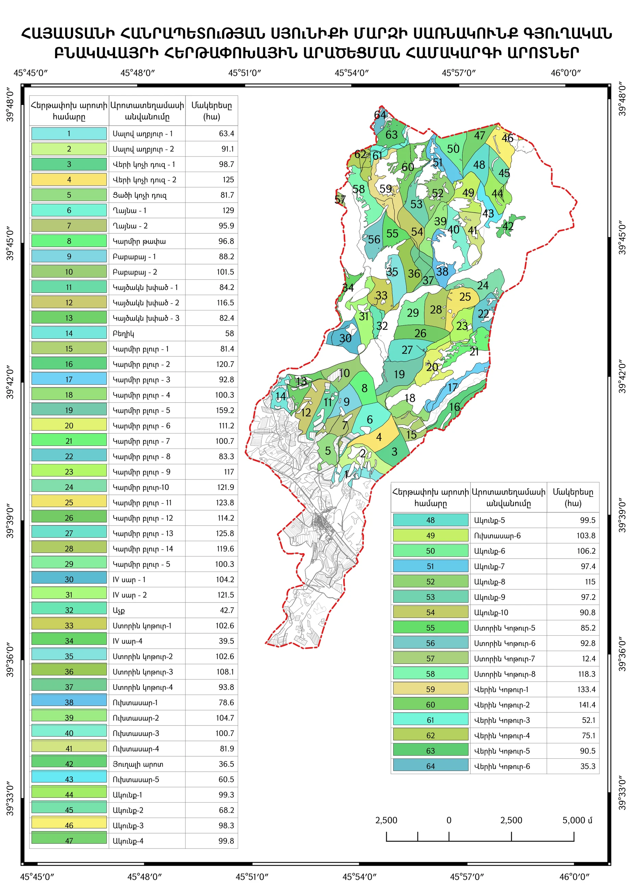
ՀԵՐԹԱՓՈԽԱՅԻՆ ԱՐԱԾԵՑՄԱՆ ՀԱՄԱԿԱՐԳԻ ԱՐՈՏՆԵՐՆ ԸՍՏ ԾՈՎԻ ՄԱԿԱՐԴԱԿԻՑ ՈւՆԵՑԱԾ ԲԱՐՁՐՈւԹՅՈւՆՆԵՐԻ
- Քարտեզագրում ըստ կառավարման պլանների
- Համապատասխան GIS շերտերի ստեղծում
Տվյալները հիմք են հանդիսանում տարածքների բարելավման աշխատանքների համար:
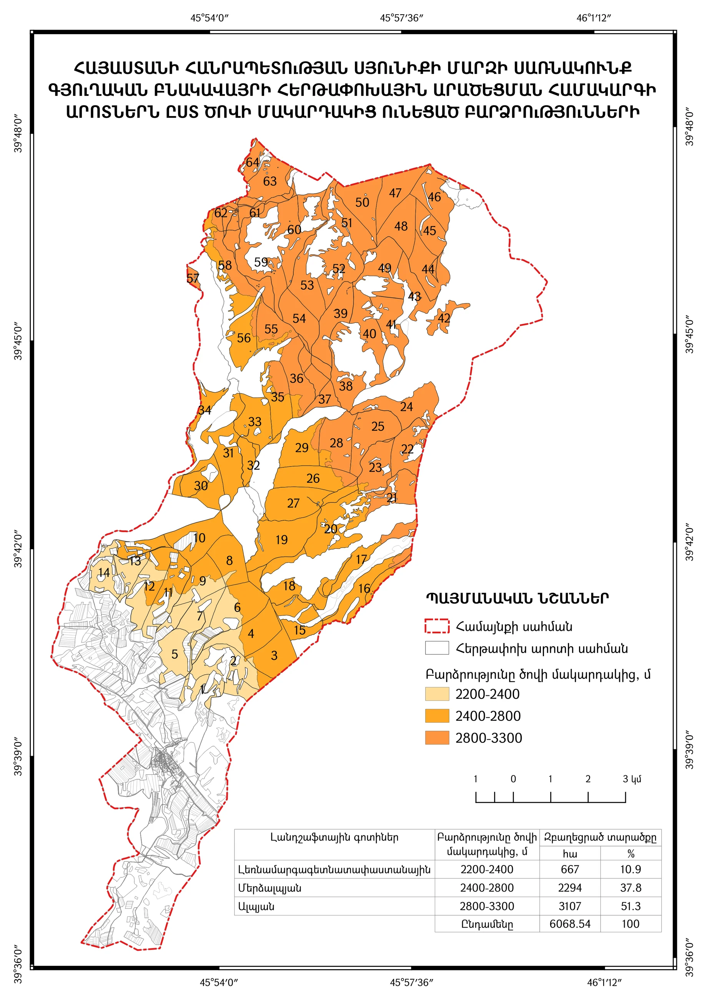
Տարածքը 3D տեսքով
Google Earth3D թռիչք տարածքի վրայով։
Հողակտորներ և սահմաններՆշված են հողակտորներ և սահմանագծեր։
ԱՏՀ և ծրագրավորում
Ծրագրավորումը կիրառվում է տվյալների մշակման, ավտոմատացման և վերլուծության համար։
Python
GIS վերլուծություն, ավտոմատացում
R
Տարածական վիճակագրություն
⚡ Արևային կայանի արտադրողականության կանխատեսման համակարգ
🛰️
Հեռահար զոնդավորման կիրառություն
Համակարգում կիրառվում են սատելիտային տվյալներ՝
- ☀️Արևային ճառագայթման (GHI) գնահատում
- 🌤️Ամպամածության մոնիթորինգ (cloud cover)
- 🌍Տարածքի վերլուծություն (թեքություն, ուղղություն)
Առավելություններ
- Բարձր ճշգրտություն առանց տեղային սենսորների
- Մեծ տարածքների վերլուծություն
- Իրական ժամանակին մոտ տվյալներ
🚀
Արդյունք
Հեռահար զոնդավորումը թույլ է տալիս՝
- բարելավել կանխատեսման ճշգրտությունը
- նվազեցնել ռիսկերը
- օպտիմալացնել էներգիայի արտադրությունը
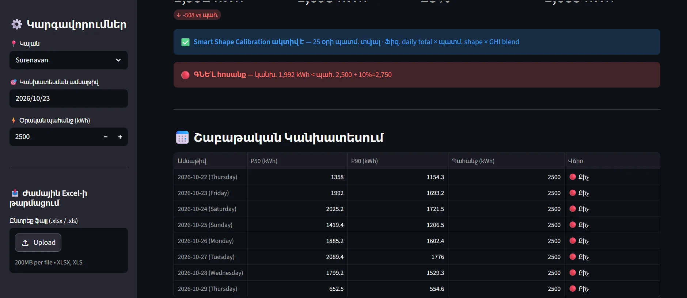
Օգտագործվել է նաև Google Earth Engine
Շնորհակալություն
Հարցեր և քննարկում